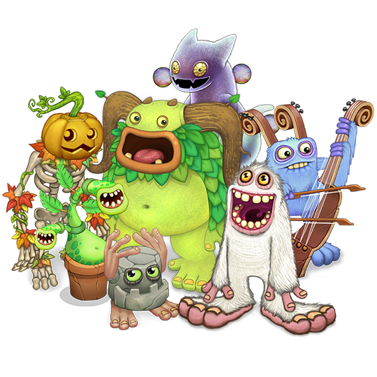

Yo, superfans van My Singing Monsters, Op deze website vind je alles en dan ook alles over My Singing Monsters. Met een Guide forbeginners, Een dikke stonks Guide en voorbeelden van dikke songs die je op je composor Island kan maken."
Wil je toch meer weten over My Singing Monsters dan dat deze website je biet, kijk dan op de wiki van My Singing Monsters door hier te klikken.

Wat vind jij van My Singing Monsters?